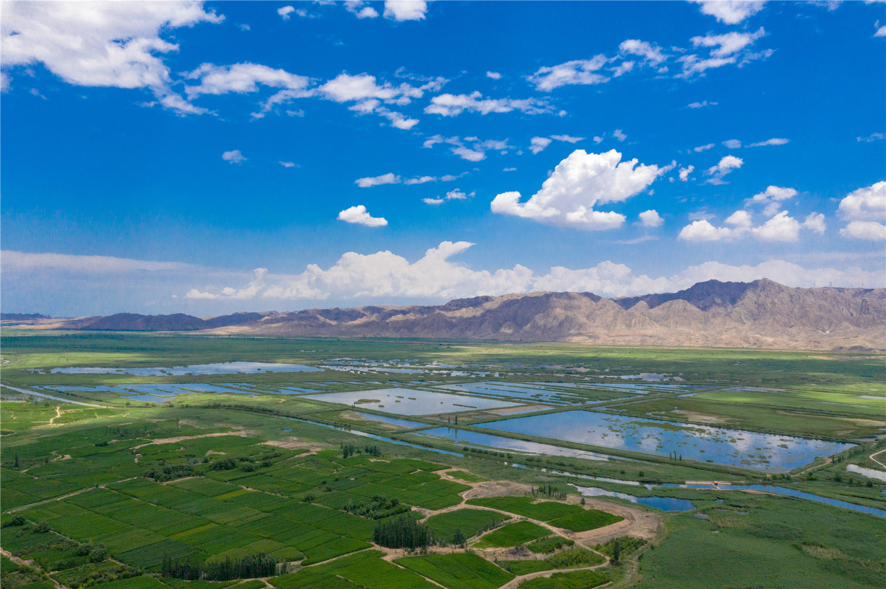
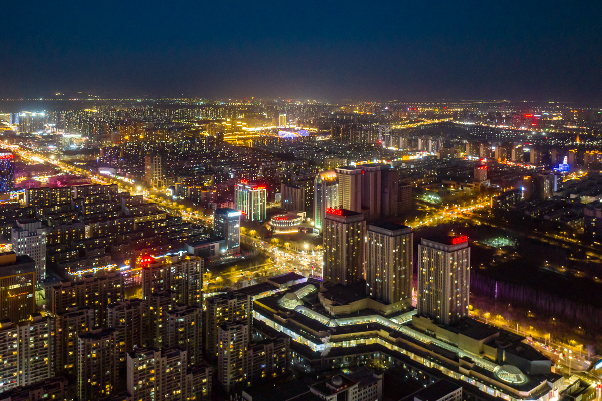

宁夏
天下黄河富宁夏。如果你在夏秋来到银川平原，连绵不绝的森林以及形状不规则、闪亮的湖泊和湿地会印证这一点。它被称为“塞北江南”，却拥有江南从未有过的大气磅礴，铁骨铮铮的贺兰山会告诉你，这是亚欧大陆干燥而宁谧的腹地。宁夏是独一无二的。银川平原宜人舒适，就连候鸟也愿意在这浩瀚的北方水乡停留。沿着中国第一条沙漠铁路旅行，就能一览金色沙浪翻腾的腾格里风光。离开喧闹的景区，黄河边大漠旁漂亮的客栈，能让你实现一段真正的黄河梦。在游牧民族不停侵扰中原文明的历史中，宁夏是个让人不忍拒绝的温柔路口，于是，有了与宋和辽并存的西夏王朝。如今我们只能通过陵墓、遗落的长城和博物馆里的波斯、罗马器具，来想象这个路口的盛况与风流。今天宁夏最主要的身份大概是“回族自治区”，华美现代的中阿之轴和古朴尊严的清真寺，是中国伊斯兰教最好的艺术表达。
欢迎来到我们的网站

宁夏回族自治区位于中国西北部的黄河中上游地区，地处北纬35°14′~39°23′，东经104°17′~107°39′之间。东邻陕西省，西部、北部接内蒙古自治区，南部与甘肃省相连，总面积为6.64万平方千米。从地理位置看，宁夏在中国东、中、西三大带划分中，位于中部、西部过渡区，是西北地区距离华北最近的省（区），区位优势明显。
宁夏自然风貌 粗犷与秀丽的融合
如果说烟雨江南代表了婉约之美，那么塞北大漠则充满阳刚粗犷。在宁夏，这两种美被和谐地放到了一处，而这又是一种怎样的造化，如此神奇！
小容量有大乾坤
宁夏总面积为6.64万平方千米，是中国面积较小的省区之一。如果把宁夏与周边相邻的新疆、内蒙古、甘肃或青海相比，其面积可以称得上“袖珍”二字。宁夏疆域南北狭长，南北相距逾456千米，东西相距仅约250千米。但假如你真的在宁夏走上一圈，便会发现，它虽小，却有着复杂的地貌特质，有山有河，平原大漠，湖泊湿地，粗犷奔放中却带着精致秀丽。这一切，与宁夏特殊的地质构造、地理位置等，有着密不可分的关系。人们常说，独特就是性格。宁夏就是这样一个有性格的地方。宁夏地处北纬35°14′～39°23′，东经104°17′～107°39′，这片位于草原与荒漠、黄土高原与内蒙古高原的交会、过渡地带，有着复杂多样的自然条件，地貌差异很大。高山、盆地、平原、台地、黄土荒漠等，都是受制于大自然万千载的地质构造运动。在数万年的地质变化中，北部地块因受到挤压而发生断裂和拉张，银川盆地强烈凹陷，而其两侧的贺兰山地和鄂尔多斯高原相对隆升。贺兰山与银川平原，高差达2400余米，其间既发育有河流阶地，也有平原和湖沼，形成了在地貌上典型的“拉张型结构”。宁夏的南部地块则在地质构造运动的挤压下，形成了北东—南西展布的、以六盘山为代表的一系列弧形山地，和断陷盆地相间排列，构成典型的挤压型地貌结构。
黄河出青铜峡之后，变得平缓而温柔起来。河水水势顺着从西南向东北逐渐倾斜的平原地势斜贯于宁夏平原之上，美丽富饶的宁夏平原正是在它的哺育下得以养成的。
宁夏的整个地势南高北低，并呈阶梯状下降，山地迭起，平原错落，丘陵连绵，沙丘、沙地散布。南部以流水侵蚀的黄土地貌为主，中部和北部是内蒙古高原的一部分，以干旱剥蚀、风蚀地貌为主，境内有较为高峻的山地和广泛分布的丘陵。复杂多样的地貌类型，为经济的多样化发展提供了便利条件。也因为如此，宁夏才得以同时兼有发达的农耕业和畜牧业，在今天，更是难得的多元化旅游经济资源。